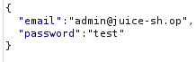
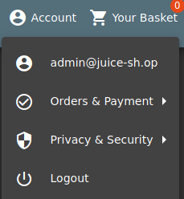

Task 3 Inject the juice
Question #1: Log into the administrator account! Using Burp to intercept the data that is sent when submitting a login attempt we can see that the data's structure

If we now use
as the email in the login form and use arbitrary data in the password field we gain access to the site thanks to SQLi. An evaluation like this can also be used when an email is not valid or known. For this reason
works too.

Answer: 32a5e0f21372bcc1000a6088b93b458e41f0e02aQuestion #2: Log into the Bender account! If we use
as the email we gain access to Bender's account. This is because it's a valid email and with the comment we remove the check for a passord.